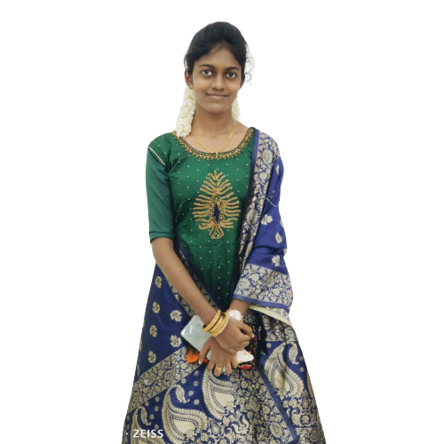

Sesslyn Johnson
A succinct life history of Sesslyn a succinct life history of Sesslyn a succinct life history of Sesslyn


A succinct life history of Sesslyn a succinct life history of Sesslyn a succinct life history of Sesslyn
Sesslyn here. Being only 18, I I'm an FSSA student right now. I'm a brave and charming girl. I used to watch movies, listen to music, and practising calligraphy. I am skilled at both photography and photo editing. I'm a good swimmer and cyclist. I speak both Tamil and English fluently. I won Governor award Raja Purshkar in Scout and Guides.
My parents both hold day jobs as teachers and taxi drivers. My sister works at Freshworks as an intern. My grandparents share our home. We have a modest yet content family. I too have a large relatives. We all go hiking together as a family. My family is everything to me, and I love them dearly.
My mother advised me academically. With the help of God, I did fairly well in school. In my school days, I competed in a variety of competitions during my time at school, including rangoli, essay writing, speech, drama, dance, debate, fashion show, writing, spell bee, talent competition, and more, and I also won awards. On the English Proficiency Test in my fifth grade, I came in third in my district. I started 10th grade in 2019 and worked really hard to get the top grade. However, Covid had taken over the entire planet by 2020. Therefore, the board test was cancelled by the TN government, which was a major blow for my academic future. I received a 96% grade on my board exams for grade 10. I started worrying too much in my twelfth std due to my class teacher who tortured me in all ways. which also had an effect on my health. My parents consoled me with God's word on everyday. With the help of God, I started working hard and secured school third with 95%.
I wish to pursue my college education at a reputable institution in Chennai. Due to my family situation, I was unable to continue my studies. I've continued to apply for some major companies as well. Many people warned me I wouldn't be able to acquire a job at a renowned IT firm, so I forced me to work as hard as I could. At last, I was selected in Freshworks.

I have deep desire to become an IAS officer.Everyone has told me I can't become an IAS officer.
If I had joined the IT division.
"If someone
had informed you that you couldn't, you could".
I will undoubtedly pursue a career in IAS department.
I aim to pursue my goal and make wonderful friends at Freshworks. I'm hoping to improve my English and flourish in technology. "Difficulties in your life don't come to destroy you, but to help you realize your hidden potential."